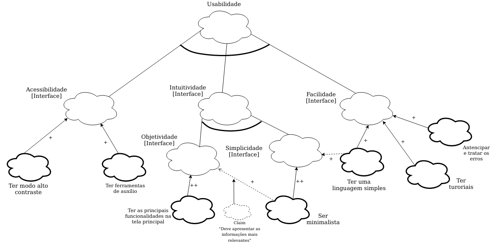
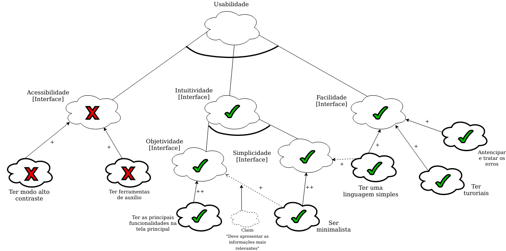
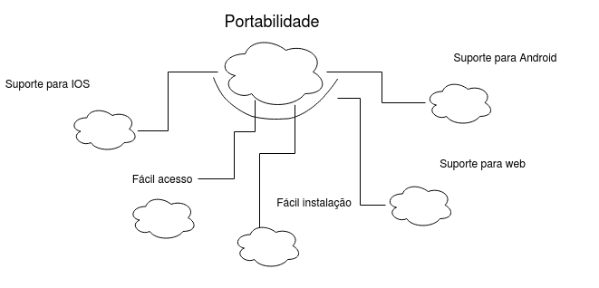
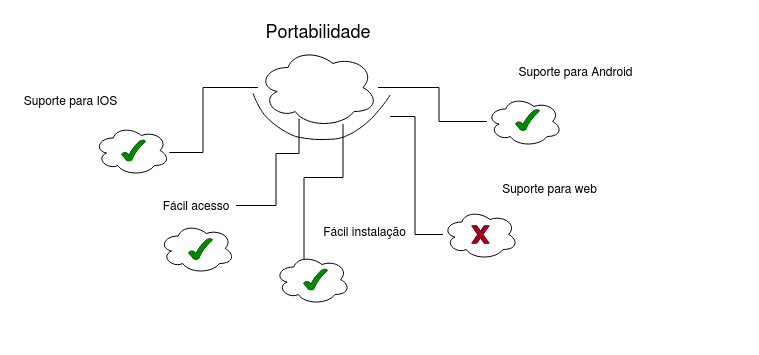
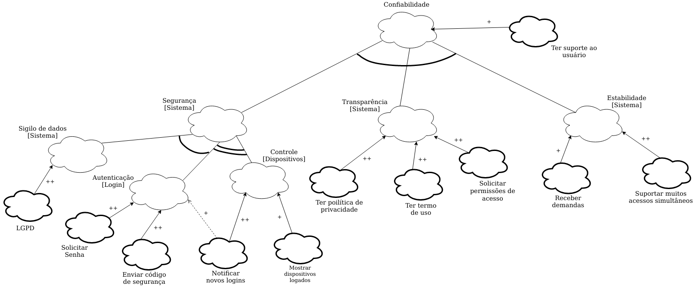
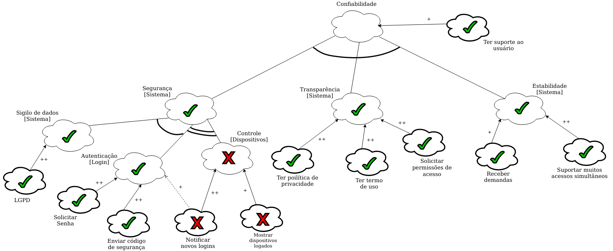
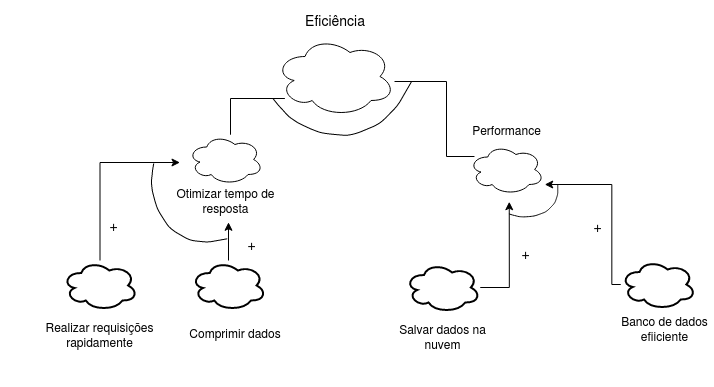
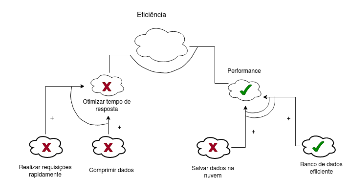

NFR Framework
1. Introdução
Inicialmente proposto em 1992 e desenvolvido por Dr. Lawrence Chung, em 1999. “O NFR Framework é uma abordagem orientada a processos, onde os requisitos não-funcionais são explicitamente representados como metas a serem obtidas” [CHUNG, 1995].
Estão relacionados com o comportamento dum sistema e não com as suas funcionalidades, pois descreve como o sistema funciona, não como o sistema faz.
São, normalmente, representados por gráficos SIG (Softgoal Interdependency Graph), que descrevem as dependências entre os softgoals e como eles são decompostos;
2. Metodologia
Podem ser abordados diversos tipos de softgoals no NFR framework como: Usabilidade, Performance, Segurança, etc. Sendo assim, a aplicação da técnica deu-se, primeiramente, pela análise dos requisitos não funcionais elicitados anteriormente. Tal análise teve como objetivo a identificação dos tipos de softgoals que os requisitos tentam cobrir.
Analisados os requistos, conclui-se que, no geral, os requisitos do projeto buscam englobar as seguintes softgoals:
- Usabilidade;
- Eficiência;
- Confiabilidade;
- Portabilidade;
Feitas as devidas análises e definas as softgoals, para o desenvolvimento dos gráficos foi elaborada um padrão de representação que está representado na legenda abaixo.

Sendo assim, utilizando a ferramenta Draw.Io, foram desenvolvidos os gráficos SIG que segem.
3. Usabilidade
3.1. Sem propagação

Link para a imagem expandida
{kind=link}
Com propagação

Link para a imagem expandida
{kind=link}
4. Portabilidade
4.1. Sem propagação

Link para a imagem expandida
{kind=link}
4.2. Com propagação

Link para a imagem expandida
{kind=link}
5. Confiabilidade
5.1. Sem propagação

Link para a imagem expandida
{kind=link}
5.2. Com propagação

Link para a imagem expandida
{kind=link}
6. Eficiência
6.1. Sem propagação

Link para a imagem expandida
{kind=link}
6.2. Com propagação

Link para a imagem expandida
{kind=link}
7. Acompanhamento
Todas as correções sugeridas foram aplicadas, como adicionar as referências necessárias.
8. Bibliografia
- Requisitos Não-Funcionais. UFPE. Disponível em: https://www.cin.ufpe.br/~if716/arquivos20152/experimentoBruno/Aula2/Aula2-Parte2-NFR%20Framework.pdf. Acesso em: 16 de out. de 2020.
- BRITO, Isabel Sofia; JANEIRO, José; GOMES, Joaquim. "NFR Framework, Engenharia de Software (2007-2008)". Disponível em: http://jaejaneiro.orgfree.com/engsofnfr.pdf
- SILVA, Reinaldo Antônio. "NFR4ES: Um Catálogo de Requisitos Não-Funcionais para Sistemas Embarcados (2019)".
- CHUNG, L. e NIXON, B., “Using Non-Functional Requirements to Systematically Support Change”, 1995;
9. Versionamento
| Versão | Data | Modificação | Autor |
|---|---|---|---|
| 0.1 | 25/03/201 | Análise dos requisitos não funcionais e definição dos softgoals | Daniel e Emily |
| 1.0 | 25/03/2021 | Adição da introdução | Emily Dias |
| 1.1 | 27/03/2021 | Adição dos participantes | Emily Dias |
| 1.2 | 30/03/2021 | Adição dos ítens de portabilidade e eficiência | Emily Dias |
| 1.3 | 30/03/2021 | Padronização do documento e adição da metodologia e dos ítens de usabilidade e confiabilidade | Daniel Porto |
| 1.4 | 31/03/2021 | Padronização dos ítens de portabilidade e eficiência | Emily Dias |
| 1.5 | 23/04/2021 | Adição de referência | Emily Dias |
| 1.6 | 01/05/2021 | Adição do acompanhamento | Emily Dias |
| 1.7 | 02/05/2021 | Ajuste de documento | Emily Dias |